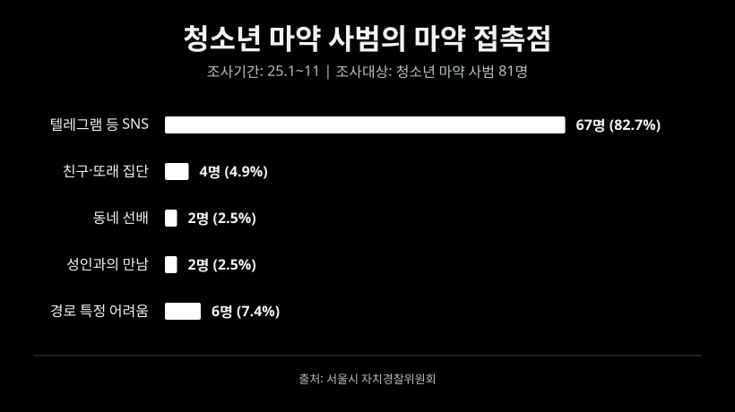

시작은, 한 끼를 고르는 일이었다.
지민은 가상의 인물이며, 쇼핑 장면은 취재 내용을 바탕으로 구성했습니다.
온라인 공간 속 범죄 통로 추적 기획
화면 너머마약생각보다 가까이 있다.
방치되고 관리되지 않는 온라인 공간의 속
그 너머에 누군가 있었다.
후기 사이의 광고는 한 건이 아니었다.
최근 급증하는 청소년 마약 문제부터 사적 보복 대행에 이르기까지, 심각한 강력 범죄들이 평범한 웹사이트를 통해 버젓이 홍보되고 있다. 누구나 쉽게 접근할 수 있는 일상적인 온라인 공간이 범죄의 주요 모집책이자 창구로 전락한 것이다.
서울시 자치경찰위원회에 따르면, 학교전담경찰관(SPO)이 작년 1월부터 11월까지 적발된 청소년 마약류 사범 81명의 수사 기록을 분석한 결과 청소년 마약류 사범 82.7%(67명)가 텔레그램 등 SNS를 통해 마약류를 접한 것으로 나타났다.
SNS 외 유입 경로로는 친구나 또래 집단을 통한 경우가 4명(4.9%)이며, 뒤이어 동네 선배 2명(2.5%), 성인과의 만남(조건만남 등)을 통한 유입 2명(2.5%) 순으로 나타났다. 유입 경로를 특정하기 어려운 사례도 6명(7.4%)에 달했다.

다이어트 식품 사이트 속에서 마약 광고를 찾은 지민 씨는 가상의 상황이지만 취재팀이 직접 확인한 온라인 공간 속에는 수백만 건의 불법 범죄 광고가 판치고 있었다. 범죄 홍보 집단은 대체로 관리가 잘 이뤄지지 않고 로그인이나 가입 없이 자유롭게 게시글을 올릴 수 있는 온라인 공간에서 활동 중이었다.
취재팀은 지난 6월 한 달간 관리가 소홀한 온라인 공간의 79개 사이트에서 게시글 136만 5,774건을 수집했다. 전처리를 거쳐 이 가운데 126만 1,327건을 16개 유형으로 분류했다.
분석 및 추적 방법
직접 찾은 방치 사이트 게시판의 광고 제목과 마약 키워드 검색결과를 수집했다. 검색 회피용 표기를 정제한 뒤 키워드 사전과 머신러닝 모델로 분류하고, 사람이 직접 검수해 결과를 점검했다. 이 가운데 마약 광고의 종류, 광고 지역, 연락용 아이디를 분석했다.
무엇을 수집했나
- 게시판 수집
- 불법 광고가 퍼진 경로를 따라 방치 사이트 118곳을 직접 찾았다. 이 중 비활성화되거나 6월 게시글이 없는 사이트를 제외한 총 79개 사이트에서 2026년 6월 1일부터 30일까지 올라온 게시글 1,365,774건을 수집했다. 수집 항목은 사이트명, 게시글 제목, 작성일, 조회수, 게시글 URL이다.
- 검색결과 수집
- 2026년 9월 28일부터 10월 6일까지 11번가, 쿠팡 등 10개 쇼핑 플랫폼을 대상으로 마약 키워드를 구글에서 검색했다. 그 결과 7개 플랫폼에서 마약 광고성 검색결과 122건을 수집했다.
어떻게 정리했나
- 전처리
- 광고 제목은 검색 차단을 피하려고 전각 문자, 원 문자, 장식용 알파벳 등으로 글자를 비틀어 쓴다. 예를 들어 ‘ｅｖｏ’, ‘𝕤𝕦𝕟’, ‘🅒🅞🅘🅝’ 같은 표기를 원래 글자로 되돌렸다. ‘ㅌㄹ’(텔레그램), ‘ㅂㅋㄹ’(바카라) 같은 초성 은어는 깨지지 않게 보존했다.
- 집계 단위
- 같은 제목을 반복해 올리는 도배가 많아, 정제한 제목이 같은 글은 1건으로 세는 고유 제목(787,746건)을 함께 집계했다.
어떻게 분류했나
- 분류 방식
- 불법 광고를 16개 카테고리로 나누고 은어 키워드 사전을 직접 구축했다. 제목의 명사를 사전과 대조해 분류하고, 사전만으로 판단하기 어려운 글은 나이브 베이즈 모델로 판정했다. 글 하나는 한 카테고리에만 배정했다.
팀원 4명이 자동 분류 결과를 보지 않고 표본 1,832건을 직접 판독했다. 이 가운데 전체에서 무작위로 뽑은 700건을 대상으로 1차 분류를 평가한 결과, 635건(90.7%)에서 사람과 자동 분류의 판정이 일치했다. 마약은 사람이 마약 광고로 판정한 20건 중 18건을 자동 분류가 찾아냈다. 네 명이 공통으로 판독한 100건에서 검수자 간 판정 일치율은 98.0%였다.
사람 검수에서 잘못 분류된 게시글과 사전이 놓친 은어를 확인했고, 이후 키워드 사전을 보강해 전체를 다시 분류했다. 그 결과 16개 카테고리로 분류된 글은 1,261,327건, 미분류는 104,351건이다. 미분류에는 정상 게시글, 의미 없는 문자열이 섞여 있었다.
마약 광고는 어떻게 분석했나
전체 유형별 집계에서는 게시글 하나를 한 유형에만 배정했다. 이 기준으로 마약 유형은 44,800건, 약물 유형은 12,682건이다. 마약 심층 분석에서는 원래 유형을 유지한 채, 다른 유형에서 마약 키워드가 확인된 글까지 함께 살폈다. 심층 분석 대상은 총 46,752건으로, 전체 분석 대상 1,365,678건의 3.42%다. 마약 키워드를 필로폰, 대마초 등 17개 소분류로 묶어 종류를 집계했다. 지역은 행정동 지명 사전으로 제목 속 지명을 뽑았다. 연락처는 ‘텔레’, ‘ㅌㄹ’, ‘tg’ 등 텔레그램 표현과 함께 적힌 아이디를 뽑아 여러 게시판에 나타나는지 대조했다.
46,752마약 관련 게시글
각 표시는 마약 글이 발견된 사이트 한 곳입니다.
마약 범죄의 온상
취재팀은 게시글을 수집한 사이트 79곳 가운데 마약 관련 광고가 발견된 31곳에 집중했다. 앞서 마약 유형으로 분류한 4만 4,800건에 다른 유형으로 분류됐지만 마약도 함께 언급한 글을 더하자, 마약 관련 광고는 총 4만 6,752건이었다. 이 가운데는 전국 어디서든 마약을 구매할 수 있다고 홍보하는 광고도 있었다.
이들은 마약을 마치 일반적인 물건 파는 것처럼 '1+1', '신속', '안전' 등의 단어를 사용해 걸리지 않고 마약 배달과 함께 이 마약을 배달할 인원을 구하는 광고도 올리는 중이었다.
관리가 되지 않는 범죄 홍보의 놀이터
특히 게시글이 가장 많이 게시된 사이트는 밖에서 봤을 때는 자동차 부품·의류·시계를 판매하는 일반적인 사이트로 보였다.
하지만 서로 같은 곳이 없어 보이는 이 사이트들은 모두 로그인을 하지 않고 게시글을 올릴 수 있으며 매크로를 이용해 수백, 수천 건의 게시글을 올려도 삭제되거나 차단되지 않는다는 공통점을 가지고 있다.
몸집을 키운 범죄 통로
취재팀이 게시글을 수집한 6월 중 25일에는 가장 많은 마약 관련 게시글이 올라왔다. 단 하루 만에 세 사이트에 1만 109건의 홍보 게시글이 올라온 것이다.
같은 광고가 반복해서 올라오면서 규모가 커지게 되면 온라인에 노출될 가능성도 늘어난다. 다른 물건을 사려고 온라인에 검색을 한 이용자에게 노출되는 것이다. 이는 온라인에 익숙하면서도 판단 능력이 성숙하지 못한 청소년들이 범죄를 접할 통로를 넓히는 것이다.
어디에, 얼마나 쌓였나
취재팀은 수집한 '마약 범죄가 게시된 사이트', '게시글 속 범죄 텔레그램 아이디', '홍보 중인 마약'의 관계성을 분석했다. 분석을 통해 어떤 범죄 조직의 아이디가 어떤 마약을 홍보하고 이 아이디가 어떤 사이트에 얼마나 퍼져 있는지 확인할 수 있었다. 그래프의 선은 두 항목이 함께 등장한 고유 제목 수를 나타낸다.
마약, 새로운 가면을 쓰다.
수많은 마약 게시글들은 우리가 일반적으로 알고 있는 대마초, LSD, 필로폰과 같은 잘 알려진 공식 명칭뿐만 아니라 그들끼리 알아들을 수 있는 은어를 만들어 사용하고 있었다. 특히 가장 많이 반복되는 은어는 '아이스'였다. 아이스는 필로폰의 은어로 필로폰의 정제된 결정 형태가 투명하고 반짝이는 얼음과 흡사하게 생겼기에 붙여진 것이다. 그 뒤를 이어 다양한 마약들이 서로 다른 은어로 쓰이고 있었다.
가장 자주 등장한 마약 용어
단어를 선택해 살펴보세요.
지역명도 게시글에 자주 나타났는데 마약이 어디까지 배송 가능한지 홍보하기 위해 지역명도 게시글에 포함되는 것이다. 강남, 부산, 서울처럼 익숙한 지명을 앞세워 가까운 곳에서 거래할 수 있다고 안내했다. 수도권뿐만 아니라 광주, 부산, 대구, 천안 등 지방의 대도시를 중심으로 마약 판매 광고가 올라오며 사실상 전국적으로 구매와 배송이 가능한 상황이었다.
불법 광고가 홍보하는 지역
단어를 선택해 살펴보세요.
장막 뒤에 진짜 범죄가 있었다.
취재팀은 마약 판매로 이어지는 이 텔레그램 아이디들이 실제로 활성화된 상황인지 확인할 필요가 있었다. 광고에 아이디가 적혀 있다는 사실만으로 실제 거래가 이어진다고 단정할 수는 없었고 오래전에 남겨져 더는 응답하지 않을 가능성도 있었다.
취재팀이 광고에 적힌 텔레그램 계정으로 문의하자 “무슨 제품 찾으시죠”라는 답이 돌아왔다. 게시판에 남은 연락처 가운데 실제로 구매 문의에 응답하는 계정이 있었다. 아래는 실제 대화를 옮긴 장면이다.
이들은 직접 배달하는 것이 아니라 특정 지역의 인적이 드문 위치에 '좌표'를 만들고, 마약을 그 좌표에 두고 오는 인원을 고용했다. 이런 인원을 드라퍼 또는 지게라고 부른다. 구매자에게 비트코인이나 현금으로 대금을 받은 뒤 물건이 놓인 좌표를 알려주는 방식으로 마약을 판매하고 있었다. 취재진이 직접 연락한 텔레그램뿐 아니라 이용자가 많은 그룹방에서도 마약을 홍보하고, 전달 역할을 할 인원을 구하고 있었다.
해외 고수익 알바 유혹도 여전히
범죄로 이어지는 입구는 마약 게시글뿐만 아니었다. 취재팀이 확인한 취업사기 관련 게시글은 6월 한 달간 1만 8,553건이었다. 그중에는 작년 사회적으로 크게 문제가 된 캄보디아 한국인 대학생 사망 사건과 같은 해외 고수익 아르바이트 홍보 게시물도 있었다.
취재팀이 해당 아이디로 구직을 희망하며 연락하자 얼마 지나지 않아 답이 왔다. 상대는 신용이 좋지 않아도 일할 수 있다며 해외 근무를 제안했다. 불법적인 일을 해본 적이 있는지 노골적으로 제공된 대본으로 전화하는 보이스피싱 업무라고 설명했다.
“보이스피싱
일종입니다.”
근무지보다먼저, 신분 서류
상대는 근무 위치가 러시아 인근 동유럽이라 전했다. 또한 상대는 여권과 건강보험 자격득실확인서를 요구했다. 기본 신상 정보를 전달받아 범죄에 활용할 수 있는지 검토하려는 인상을 받았다. 이후에도 상대는 서류들을 보내라고 계속해서 재촉했다.
작년 10월, 정부가 한국인 대학생 납치·살해 사건이 발생하는 등 국민을 대상으로 한 납치·감금과 스캠 범죄가 잇따르자 외교부와 법무부, 금융위원회, 경찰청, 국세청 등 10개 기관이 참여하는 초국가범죄 특별대응TF를 출범했다. 취재진에게 응답한 계정은 동유럽 근무를 제안했고, 업무 내용을 묻자 보이스피싱의 일종이라고 설명했다.
이뿐만 아니라 신분증·학위 위조, 안락사 약물 판매, 자금 세탁을 내세운 상대들도 취재진의 연락에 모두 응답했다. 게시판에 올라오는 불법 광고는 단순히 홍보가 아닌 직접 범죄로 연결되는 통로로서 작동하고 있었다.
쇼핑몰 주소 옆에,
왜 이 연락처가?
취재팀이 다음으로 주목한 것은 검색결과 그 자체이다. 마약 관련 키워드로 검색결과를 수집해 노출 경로를 살펴보던 중 그 안에는 익숙한 쇼핑·가격비교·중고거래 플랫폼의 주소에 범죄 광고성 문구가 나타났기 때문이다.
불법 광고업자들이 대중에게 친숙한 쇼핑몰 등 유명 웹사이트를 타깃으로 삼은 것이다. 사용자가 사이트의 이름을 보고 무의식적으로 신뢰감을 가지는 심리를 노린 것으로 해킹 등 복잡한 기술을 쓰는 대신, 외부인이 자유롭게 글을 남길 수 있지만 관리는 소홀한 게시판을 파고들어 은어와 연락처 등 광고성 글을 남긴다.
○○쇼핑몰상품 문의 게시판
[지역명] [은어] 문의 @••••
작성자 익명 · 공개 게시글
△△쇼핑몰 · 검색결과[지역명] [은어] 문의 @••••
한편 유명한 사이트는 로그인을 하지 않으면 게시글을 올릴 수 없거나 그렇게 매크로로 게시글이 올라오면 관리자가 차단을 하게 된다. 그래서 그들은 사이트 자체의 검색 기능을 역이용한다. 일반적인 웹사이트에서 검색창에 특정 단어를 입력하면, 그 결과에 해당하는 고유한 웹주소가 임시로 만들어진다. 이걸 이용해 매크로를 돌려 특정 쇼핑몰 검색창에 '텔레그램 XXX 마약 팝니다'를 수백 번 검색하면 형태의 웹페이지가 서버상에 무수히 생성된다.
매크로로 특정 키워드의 검색량을 인위적으로 높이면, 공인된 사이트 메인 화면 등의 '인기 검색어'나 '최근 검색어'에 해당 불법 키워드가 링크로 노출된다. 크롤러는 이 신뢰도 높은 사이트에 주기적으로 방문했다가, 표면에 노출된 해당 링크를 타고 들어가 불법 문구가 적힌 검색 결과 페이지를 통째로 수집해 버리는 것이다.
○○쇼핑몰사이트 내 검색결과
[지역명] [은어] 문의 @••••
검색어가 표시된 결과 페이지
△△쇼핑몰 · 검색결과[지역명] [은어] 문의 @••••
크롤러가 수집한 "텔레그램 XXX 마약 팝니다"라는 내용이 검색된 검색 결과 페이지는 검색 엔진에 들어가게 된다. 이때 검색엔진은 이 페이지가 정부 기관, 유명 언론사, 혹은 대형 쇼핑몰 등 신뢰도가 매우 높은 도메인에 속해 있다는 점을 기준으로 상위 노출을 결정한다. 이 때문에 불법 범죄 광고 검색 결과가 나와 있는 공인된 페이지를 더 가치 있는 정보로 착각해 일반 사용자의 검색 화면 최상단에 노출하는 것이다. 이를 전문 용어로 '사이트 내 검색 스팸' 또는 '기생형 검색엔진 최적화'라고 부른다.
○○쇼핑몰shop.example › 검색결과
[지역명] [은어] 문의 @••••
쇼핑몰 검색 페이지에 표시된 문구
△△쇼핑몰 · 검색결과[지역명] [은어] 문의 @••••
검색결과에서 확인한 광고성 문구
122건
광고성 문구
96건
연락용 아이디가 표시된 검색결과
마약 키워드로 수집한 표본이며, 플랫폼 전체의 오염률을 뜻하지 않습니다.
취재진이 9월 28일부터 10월 6일까지 수집한 공인된 사이트 주소로 노출되는 마약 불법 광고 검색결과 122건이었다. 이 중 78.7%가 텔레그램 아이디와 같은 연락처를 가지고 있었으며 지난 6월 마약 게시판 아이디와 중복되는 10개의 아이디를 확인 가능했다. 이를 통해 마약 판매가 관리가 이뤄지지 않는 온라인 속 음지뿐만 아닌 공인된 사이트를 통해서도 대중에게 노출된다는 것을 알 수 있다.
특히 인기가 없고 관리가 이뤄지지 않는 사이트보다 공인된 사이트 주소로 범죄 홍보가 되는 것은 더 위험하다. 이는 해당 사이트를 이용하는 불특정 다수의 일반인들도 범죄에 접촉할 수 있는 기회를 만들기 때문이다.
지운 게시물의 수보다,
끊어낸 경로를 물어야 한다.
작년 10월, 이재명 대통령은 캄보디아를 비롯해 동남아시아를 대상으로 이뤄지는 불법 구인 광고를 긴급하게 삭제하라고 지시했다. 또 정부는 관계기관 등이 포함된 합동대응 TF를 구성하고 네이버·카카오·구글 등이 참여하는 협의체를 구성해 자율심의 체제를 가동했다.
이러한 사후 삭제 중심의 대응이 지닌 한계는 곧바로 플랫폼 사업자의 선제적 책임을 강제하는 입법 촉구로 이어졌다. 올해 4월, 마약 거래 알선 정보가 SNS와 오픈채팅 등을 통해 무분별하게 확산되는 것을 막기 위해 사업자에게 강력한 사전 예방 의무를 부과하는 정보통신망법 개정 촉구 건의안이 서울특별시 의회에서 발의됐다. 영국의 온라인안전법과 같은 선제적 관리 체계를 반영해, 플랫폼이 업로드 단계부터 불법 마약 정보를 자동 탐지해 차단하고 검색·추천 알고리즘에서의 노출까지 원천 봉쇄하도록 법적 책임을 지우는 것이 핵심이다.
이어 9월에는 방송미디어통신위원회가 불법스팸을 보내거나 자신의 서비스가 불법스팸 전송에 이용되는 것을 제대로 막지 않은 사업자에게 관련 매출액의 최대 6%를 과징금으로 부과하는 제정안을 의결했다. 불법스팸에 이용되는 서비스를 제공하는 사업자의 조치 의무도 구체화했다. 사업자는 광고성 정보 전송을 중단하고 보안체계 취약점을 점검·개선을 강조하는 등 정부 차원의 노력을 하고 있다.
그럼에도 정작 현장에서 정부의 대응은 헛바퀴를 돌고 있는 상황이다. 근본적인 원인은 총괄 역할 기관 부재에 따른 기형적인 단속 구조에 있다. 현재는 단일 웹사이트 게시판에 불법 스팸이 무더기로 도배되어도, 광고의 내용에 따라 모니터링 부처가 뿔뿔이 흩어진다. 불법 사금융은 금융감독원, 마약류는 식품의약품안전처, 성인물은 여성가족부가 각각 쪼개어 들여다보는 식이다.
부처별로 적발한 불법 광고를 방송통신심의위원회에 넘기고, 방심위가 심의를 거쳐 사이트 관리자에게 삭제나 차단을 권고하는 구조가 반복되고 있다. 칸막이식 모니터링 체계로는 매크로 프로그램과 AI를 활용하는 불법 광고 물량을 감당하기 어려울 뿐만 아니라, 단속의 시야마저 과거의 SNS나 커뮤니티 적발에만 머물러 있어 검색엔진을 교묘하게 악용하는 신종 스팸 수법 앞에서는 속수무책이라는 지적이 나온다.
결국 낡은 단속망을 하나로 묶어, 고도화되는 온라인 불법 광고를 총괄적으로 추적하고 신속하게 제재할 통합 컨트롤타워의 구축이 시급하다는 목소리가 커지고 있다. 정부가 적극적인 문제 해결에 나서지 않는다면, 온라인 공간에서 싹튼 범죄의 확산이 결국 현실 사회의 치안과 민생에 걷잡을 수 없이 큰 타격을 입힐 수 있다.
처음부터 다시 읽기 ↑"악한 사람들이 목적을 이루는 데 필요한 것은
선한 사람들이 방관하며 아무것도 하지 않는 것뿐이다."